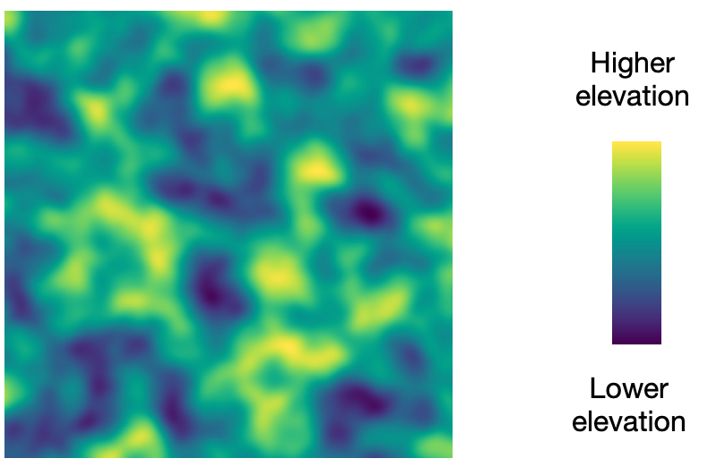

This study will test how quickly people can read color maps.
The maps will depict the height of terrain in color.
In this example, higher areas are shown in bright yellow. Green and blue depict areas with lower elevation.
